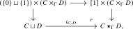
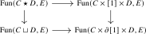
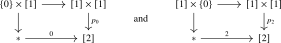
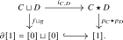
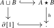
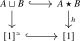
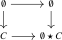

Chapters 1 and 2 use the rebuild2 formalization. Agda links for Chapter 3 remain temporarily unavailable.
3.6 Joins
A final category constructor we introduce is the join \(C \star D\) of two categories. This construction admits two universal properties:
- There is a mapping-in universal property: the join comes equipped with a functor to \([1]\), and a map living over \([1]\) from a category \(T\) into the join is the same as a pair of maps \(T_0 \to C\) and \(T_1 \to D\), where the sources are the fibes of \(T \to [1]\).
- There is a mapping-out universal property: the join is obtained from the product \([1] \times C \times D\) by collapsing \(\{0\} \times C \times D\) onto \(C\) and \(\{1\} \times C \times D\) onto \(D\).
In order to obtain joins in arbitrary categorical contexts, we will in fact introduce versions of the join over an arbitrary base category \(\Gamma \).
Using the join construction we define \(C^{\triangleright } := C \star *\) and \(C^{\triangleleft } := * \star C\). We may then inductively define the categories \([n]\) by \([0] = *\) and \([n+1] := [n]^{\triangleright }\).
Two universal properties
We start with the universal property of mapping out of \(C \star D\):
Axiom J.1 (Join axiom). Let \(\Gamma \) be an anima and let \(p\colon C\to \Gamma \) and \(q\colon D\to \Gamma \) be functors. There is a category \(C\star _\Gamma D\) over \(\Gamma \) and a pushout square

over \(\Gamma \). Here the top map is induced by the inclusion \(\{0\}\sqcup \{1\}\to [1]\), and the left vertical map is given by \[ (\{0\}\sqcup \{1\})\times (C\times _\Gamma D) \iso (C\times _\Gamma D)\sqcup (C\times _\Gamma D) \xrightarrow {\pr _C\sqcup \pr _D}C\sqcup D. \] The displayed maps to \(\Gamma \times [1]\) induce a height functor \[ h_{C,D}\colon C\star _\Gamma D\to \Gamma \times [1] \] whose composite with the projection to \(\Gamma \) is the structural functor of the relative join.
For \(\Gamma =*\), we write \(C\star D\) for \(C\star _*D\).
Remark 3.6.1. In other words, for every third category \(E\), the commutative square

is a pullback square.
Example 3.6.3. By Corollary 2.2.8, the commutative squares

are pushout squares. It follows that there are equivalences \[ [0] \star [1] \iso [2] \inviso [1] \star [0]. \]
Notation 3.6.4. For any functor \(g\colon C \star D \to E\), we denote by \[ g_C \colon C \to E \qquadtext { and } g_D \colon D \to E \] the composites of \(g\) with the inclusions \(C \to C \star D\) and \(D \to C \star D\), respectively.
Construction 3.6.5 (Functoriality of joins). Consider functors \(f\colon C \to C'\) and \(g\colon D \to D'\). Then the functors \(f \times \id _{[1]} \times g\colon C \times [1] \times D \to C' \times [1] \times D'\) and \(f \sqcup g\colon C \sqcup D \to C' \sqcup D'\) induce a functor \(f \star g\colon C \star D \to C' \star D'\). The universal property supplies identifications \[ \id _C\star \id _D = \id _{C\star D} \qquadtext {and}\qquad (f'\star g')\circ (f\star g) = (f'\circ f)\star (g'\circ g). \]
Example 3.6.6. Taking \(f = p_C\colon C \to [0]\) and \(g = p_D\colon D \to [0]\), we obtain a map \(p_C \star p_D\colon C \star D \to [0] \star [0] = [1]\) fitting in a commutative diagram as follows:

We now come to the second universal property of \(C \star D\):
Axiom J.2 (Join as dependent product). Let \(\Gamma \) be a category and let \(C\to \Gamma \) and \(D\to \Gamma \) be functors. There is a category \(C\star _\Gamma D\) over \(\Gamma \) and a height functor \(h_{C,D}\colon C\star _\Gamma D\to \Gamma \times [1]\). When \(\Gamma \) is an anima, we require these to agree with the category and height functor supplied by Axiom J.1. Write \[ j_\Gamma :=\id _\Gamma \times j\colon \Gamma \times \partial [1]\longrightarrow \Gamma \times [1] \] for the weakening of the boundary inclusion. Then the canonical functor \[ C\sqcup D\longrightarrow (C\star _\Gamma D)\times _{\Gamma \times [1]}(\Gamma \times \partial [1]) \] is an equivalence, and its inverse exhibits the height functor \(h_{C,D}\colon C\star _\Gamma D\to \Gamma \times [1]\) as a dependent product of the category \(C\sqcup D\) over \(\Gamma \times \partial [1]\) along \(j_\Gamma \), in the sense of Definition 3.5.4.
Definition 3.6.7. Let \(p\colon C\to S\) and \(q\colon D\to S\) be functors. The category \(C\star _S D\to S\) supplied by Axiom J.2 is called the relative join of \(C\) and \(D\) over \(S\).
Remark 3.6.8. Let us spell out the resulting universal property more explicitly. Consider a category \(E\) over \(\Gamma \times [1]\) and denote by \(E_0\) and \(E_1\) its restrictions along the two sections \(\Gamma \to \Gamma \times [1]\). Then Axiom J.2 gives an equivalence \[ \Map _{\Gamma \times [1]}(E,C\star _\Gamma D) \simeq \Map _{\Gamma \times \partial [1]} (E\times _{\Gamma \times [1]}(\Gamma \times \partial [1]),C\sqcup D) \simeq \Map _\Gamma (E_0,C)\times \Map _\Gamma (E_1,D). \] In other words, giving a functor \(\varphi \colon E\to C\star _\Gamma D\) over \(\Gamma \times [1]\) amounts to giving functors \(\varphi _0\colon E_0\to C\) and \(\varphi _1\colon E_1\to D\) over \(\Gamma \).
Proposition 3.6.9. Let \(A\) and \(B\) be two categories. The canonical embedding \(A\sqcup B\hookrightarrow A\star B\) induces an equivalence \[ A^\simeq \sqcup B^\simeq \iso (A\star B)^\simeq \, . \]
Proof
Proof. Let \(h\colon A\star B\to [1]\) be the height functor. By Axiom J.2, there is a pullback square

The canonical equivalence \(\partial [1]\iso [1]^\simeq \) from Axiom C.1 identifies this with a pullback square

up to the specified comparison. The square formed by the two groupoid-core inclusions and \(h\) therefore induces a functor \[ u\colon (A\star B)^\simeq \longrightarrow (A\sqcup B)^\simeq \iso A^\simeq \sqcup B^\simeq . \] The functor \(u\) is an embedding: after composing with the groupoid-core inclusion of \(A\sqcup B\) and then with \(A\sqcup B\hookrightarrow A\star B\), it agrees with the groupoid-core inclusion of \(A\star B\). Since these inclusions are embeddings, so is \(u\) by Lemma 1.6.26.
Applying groupoid cores to \(A\sqcup B\hookrightarrow A\star B\) and using Lemma 2.1.28 gives a section \[ A^\simeq \sqcup B^\simeq \longrightarrow (A\star B)^\simeq \] of \(u\). Hence \(u\) is an equivalence by Lemma 1.6.24. □
Unitality and associativity
We will now show that the join operation \((C,D) \mapsto C \star D\) is unital and associative.
Lemma 3.6.10 (Unitality of joins). For every category \(C\), the maps \(C \to \emptyset \star C\) and \(C \to C \star \emptyset \) are equivalences.
Proof
Proof. By definition the category \(\emptyset \star C\) sits in a pushout square

and hence the bottom map is an equivalence. A similar argument applies to \(C \star \emptyset \). □
Construction 3.6.11 (Associativity of joins). Given categories \(C\), \(D\) and \(E\), we construct an equivalence \[ a_{C,D,E}\colon C \star (D \star E) \iso (C \star D) \star E. \] Applying the mapping-out property of joins twice shows that a functor from either parenthesization to a category \(F\) consists of the same data: functors from \(C\), \(D\), and \(E\) to \(F\); families of connecting morphisms from \(C\) to \(D\), from \(D\) to \(E\), and from \(C\) to \(E\); and a commutative triangle relating these three families over \(C\times D\times E\). The two pullback descriptions are identified using the equivalences \[ [0]\star [1]\iso [2] \inviso [1]\star [0] \] from Example 3.6.3.
The universal property therefore gives a comparison \(a_{C,D,E}\colon C\star (D\star E)\to (C\star D)\star E\) which is the identity on \(C\), \(D\), and \(E\). For every category \(F\), precomposition with \(a_{C,D,E}\) identifies the two pullback descriptions above and is consequently an equivalence of functor categories. Passing to groupoid cores and applying Proposition 1.4.11 shows that \(a_{C,D,E}\) is an equivalence.
No triangle or pentagon compatibility among the chosen equivalences is asserted here. Such a statement would require additional specified comparison data, which is not part of the present naive language.
Definition 3.6.12. Let \(C\) be a category. We define its left cone \(C^{\triangleleft }\) and its right cone \(C^{\triangleright }\) as follows: \[ C^{\triangleleft } := [0] \star C, \qquadtext { and } C^{\triangleright } := C \star [0]. \]
Supplementary notes
- The attaching maps of a join AI-generated